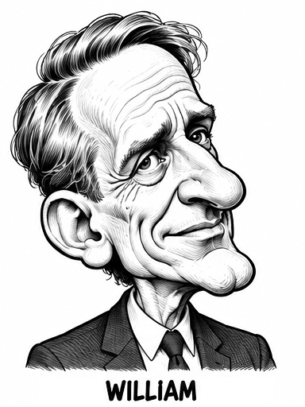
01 / THE CAST
William Lane Craig
The debate referee
Step right up. Ask anything.
Christian apologists. Curious crowds. Conversations that take unexpected turns.
Five-panel satire from a park where every ride has an argument—and someone in the queue has a follow-up.
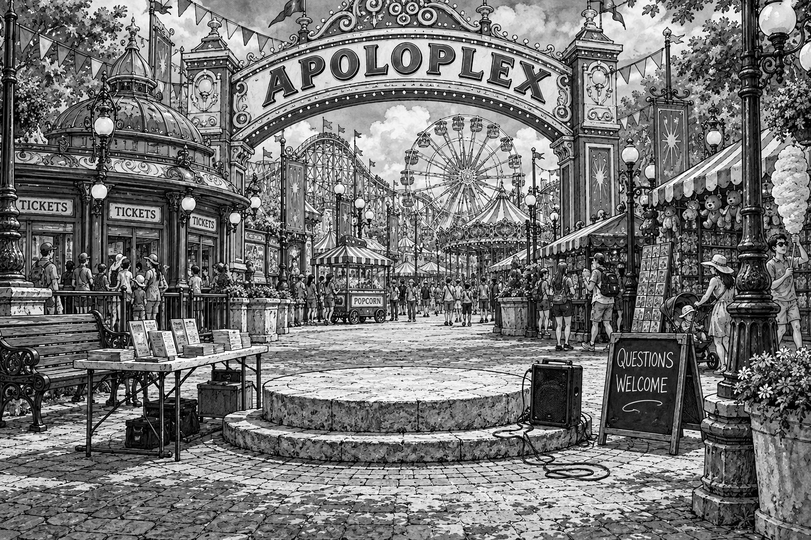
01 / The cast
Eight apologists, reimagined in ink. Each brings a different style to the midway. The crowd brings the follow-ups.
These are fictional comic roles. Open a portrait to see poses, expressions and an imagined park encounter. Portraits stay in ink in both editions.

The debate referee
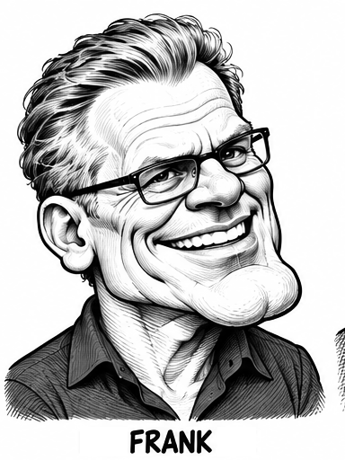
The motive detector
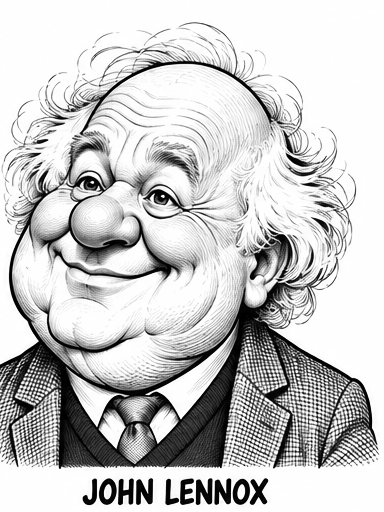
The anecdotal victor
Civilization's credit collector
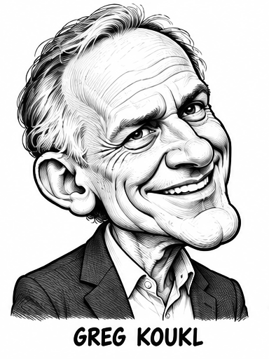
The doctrinal mechanic
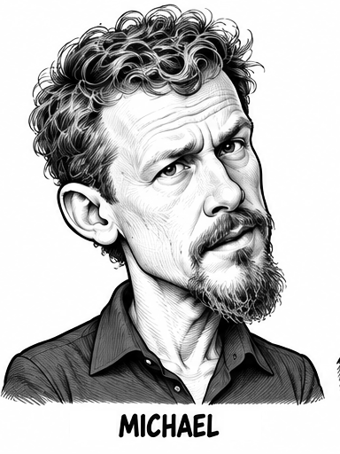
The scholarship counterpuncher
Inspiring PhilosophyThe rival's stress tester
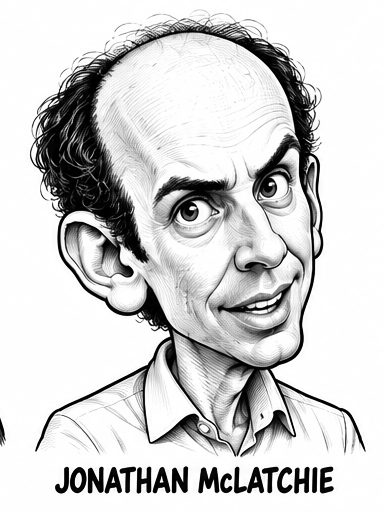
The corroboration collector
02 / The park
Follow the queue past crooked mirrors, theatrical terrors and suspiciously persuasive prize booths. There is room for a conversation at every stop.
The same drawings, in two editions. Open any scene for a closer look.
Ticket booths, tangled bunting and a stone plinth. A passing crowd becomes an audience, and the first question stops traffic.
standards of evidence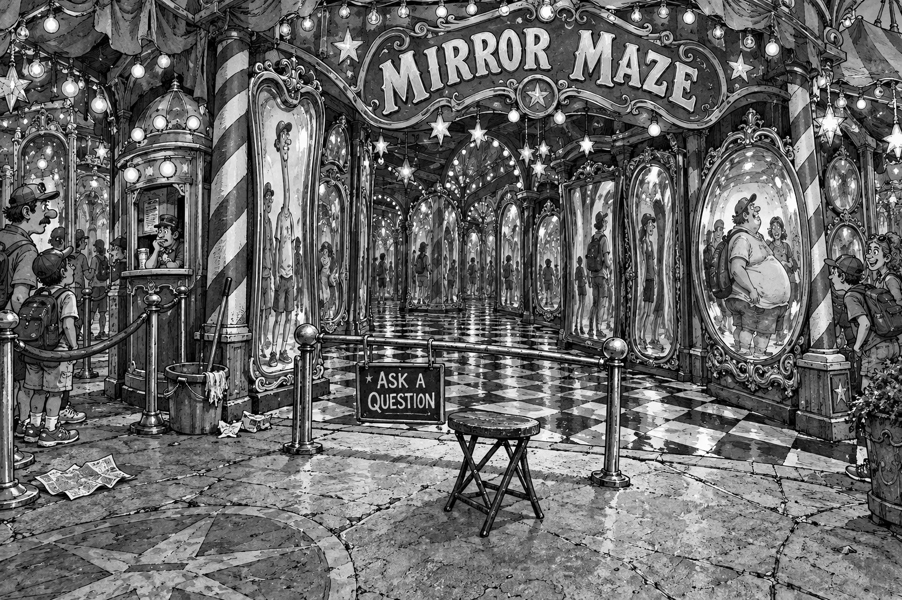
A crooked reflection, a very straight question. Out by the queue rail, visitors ask whether their views have survived the retelling.
distortion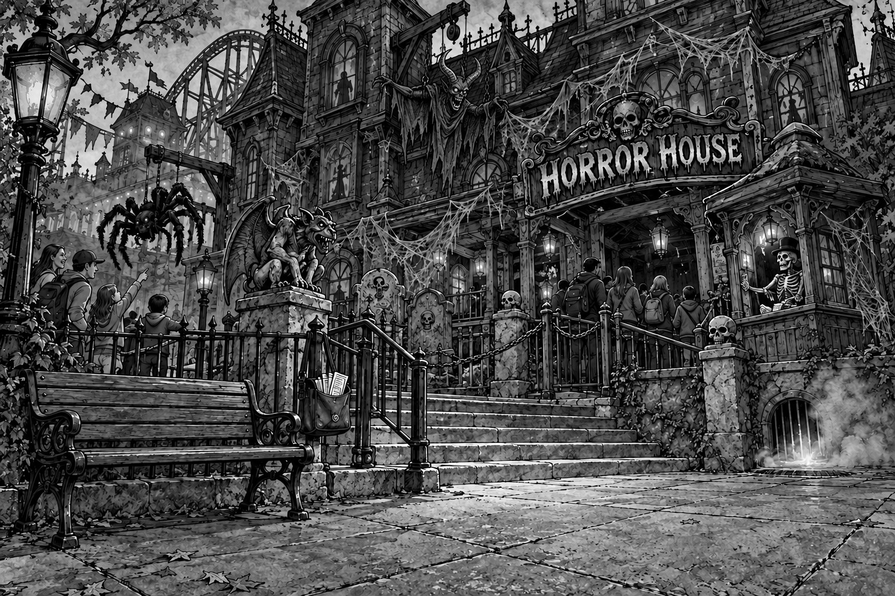
Theatrical flames, a devil on a pulley and a queue that has questions about Hell. Fear is easy to stage. Eternal punishment takes explaining.
Hell and eternal punishment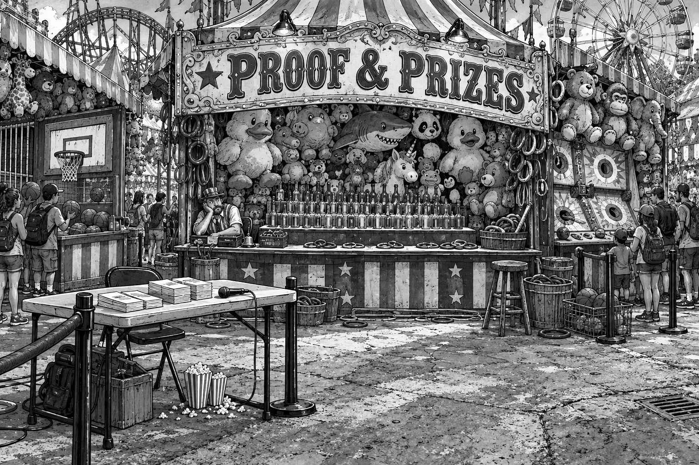
Step up to the counter. Claims meet ring tosses, measuring marks and the awkward business of a fair test.
testability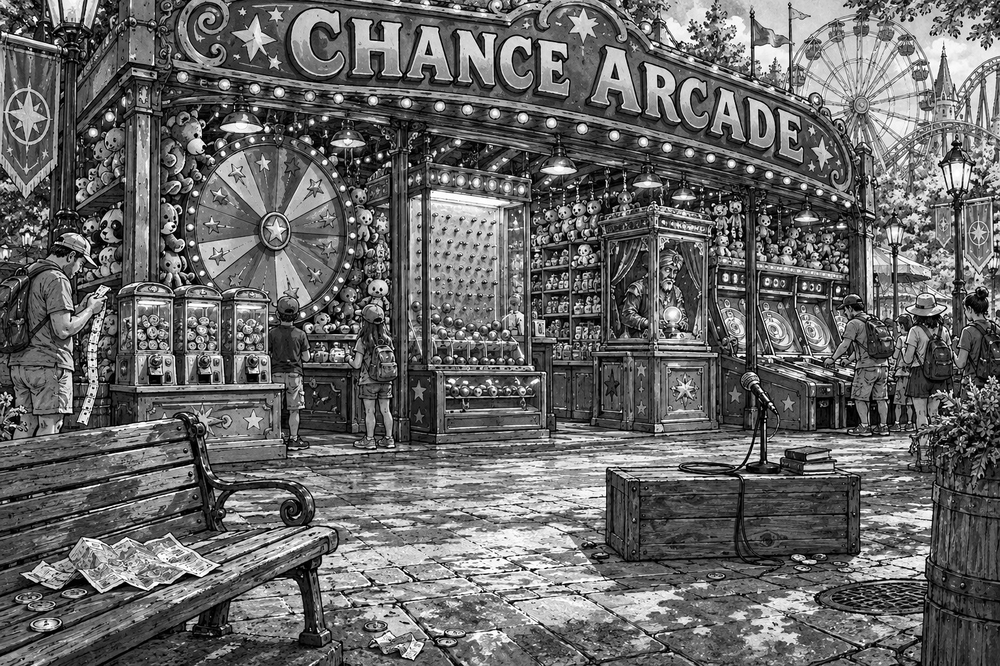
Spinning wheels, falling tokens and patterns everywhere. Somebody has a theory about the last result. Can it predict the next one?
probability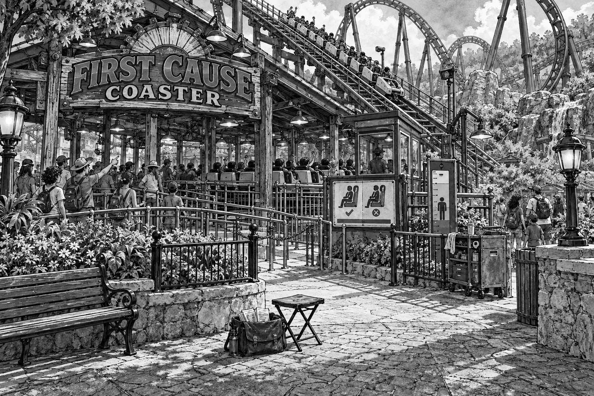
Follow the chain, watch the gears, mind the loose wheel. The line keeps moving while the conversation follows causes backward.
causal explanation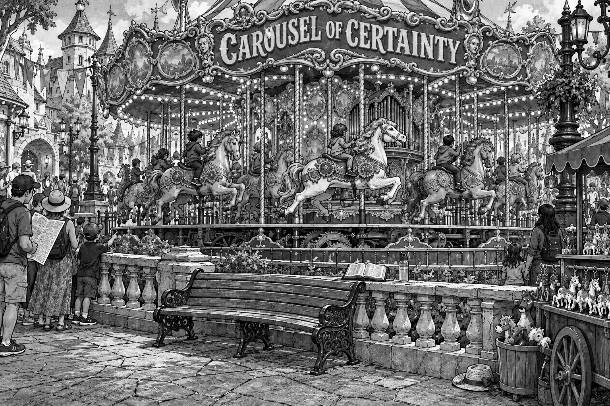
Brass poles, painted horses and a wonderfully familiar conclusion. Another lap gives the crowd time for a follow-up.
circular reasoning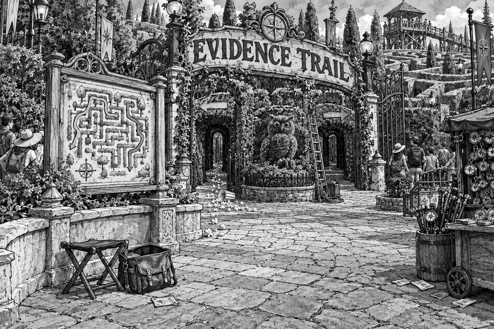
A fork in the hedges. A map, a clue and two confident arrows. Which discovery would make a visitor change direction?
inference03 / The idea
At Apoloplex, apologists evangelize among the passing crowds. A visitor stops. Someone asks a question. And a perfectly ordinary day at the theme park takes a philosophical detour.
The comics unfold in five panels, with exaggerated faces, cluttered scenes and an eye for the gap between a question and its answer.